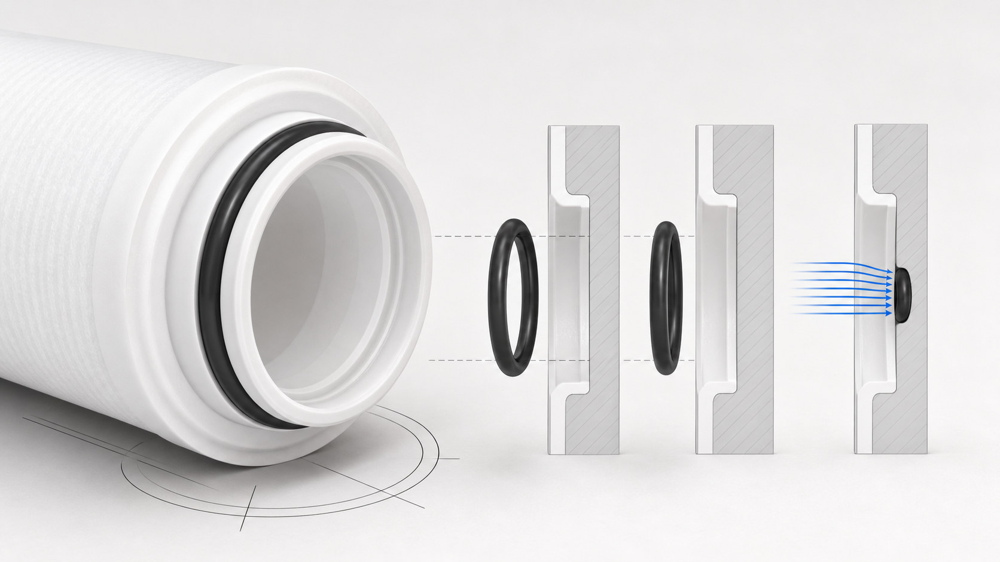

PP Melt-Blown Filter with Silicone O-ring
PP · accepted facts onlyThis stable URL now uses the correct material term: Silicone O-ring. The O-ring is a sealing component; its material, size, end adapter and housing interface must be confirmed before quotation.

PP
Verified technical information
Source-listed options must be confirmed against the quotation and production drawing.
PP
Configuration
- Silicone O-ring
- Confirm the cartridge length, outside and inside diameters, micron rating, end configuration, seal material and housing fit before quotation.
- Configuration
- Source-listed options must be confirmed against the quotation and production drawing.
PP
How to select
- Send the application, feed-water condition and required sediment-control stage.
- Confirm cartridge length, OD, ID, micron rating, end configuration and seal material.
- Confirm the housing interface, quantity, packaging and required documents.
FAQ
How to select
Is the seal called a Silicon ring or a Silicone O-ring?
The correct material term on this page is Silicone O-ring. Seal size, adapter and housing interface must still be confirmed for the project.
What should a buyer confirm for PP Melt-Blown Filter with Silicone O-ring?
Confirm the cartridge length, outside and inside diameters, micron rating, end configuration, seal material and housing fit before quotation.
Request a technical quote: PP Melt-Blown Filter with Silicone O-ring
Confirm the cartridge length, outside and inside diameters, micron rating, end configuration, seal material and housing fit before quotation.